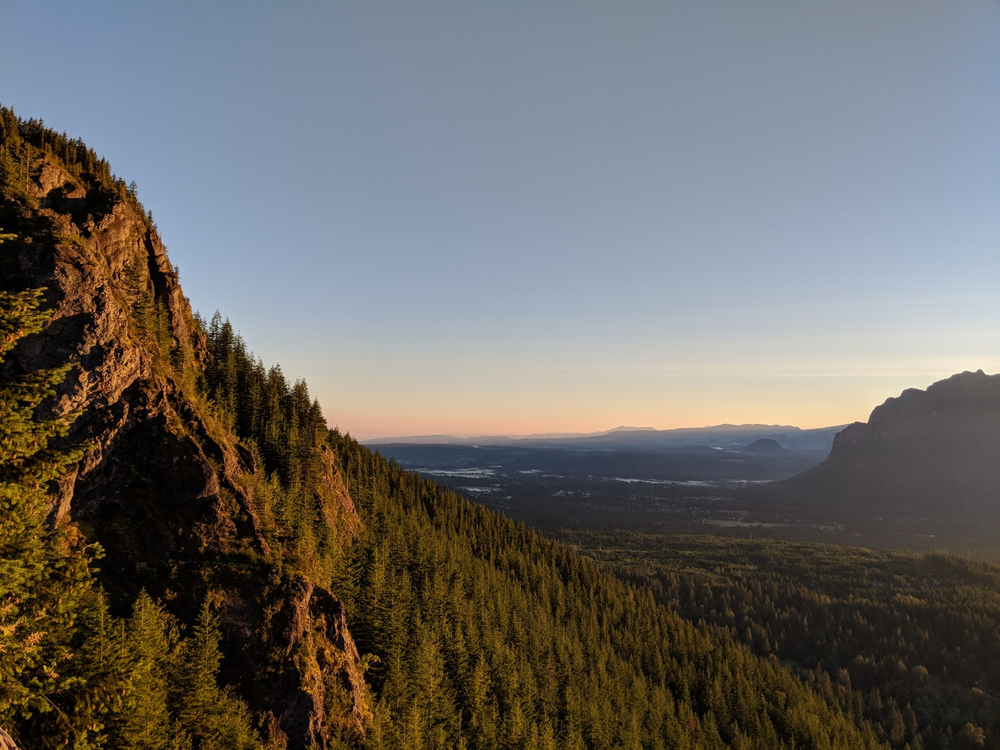
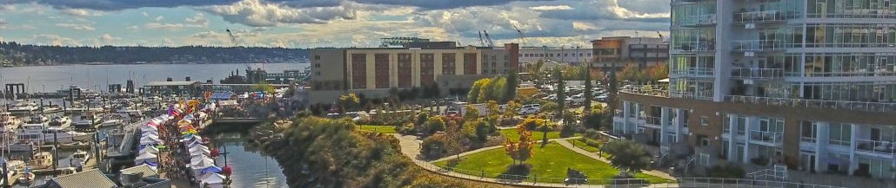
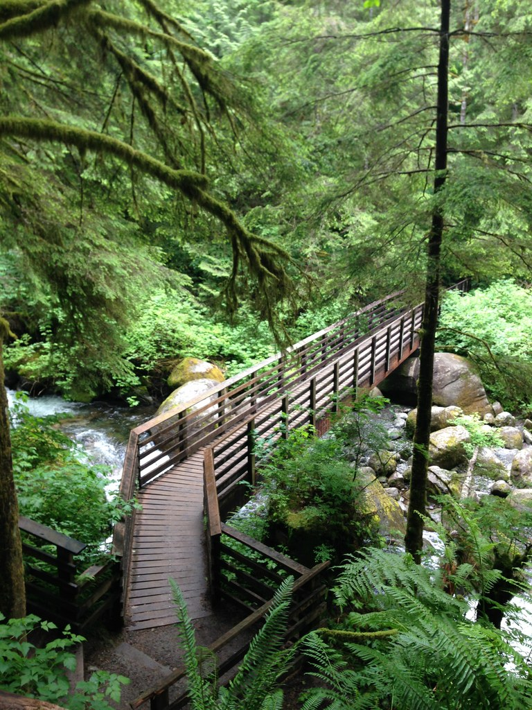
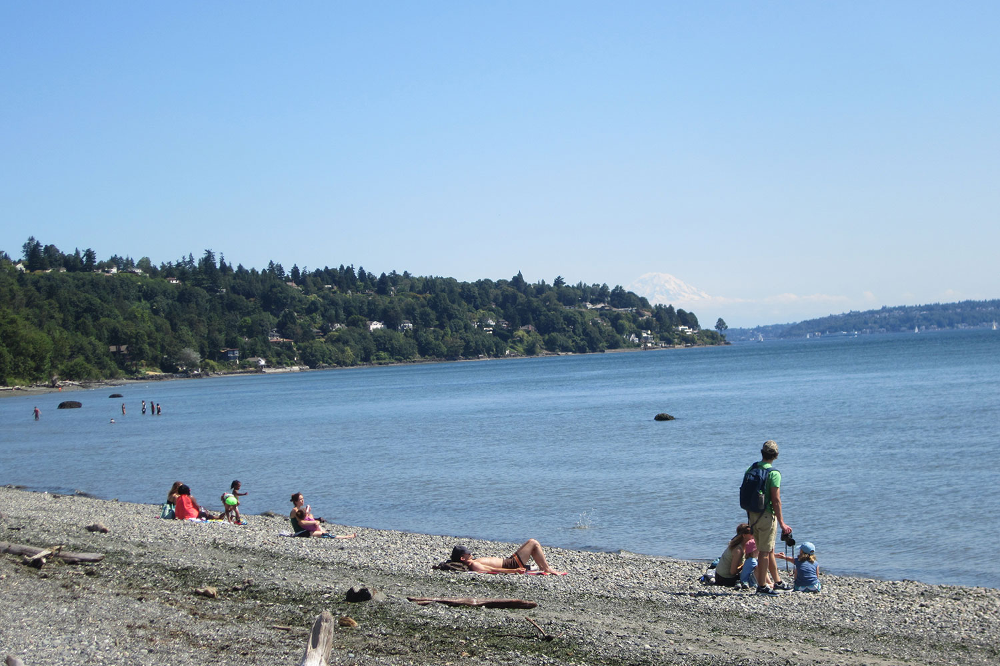
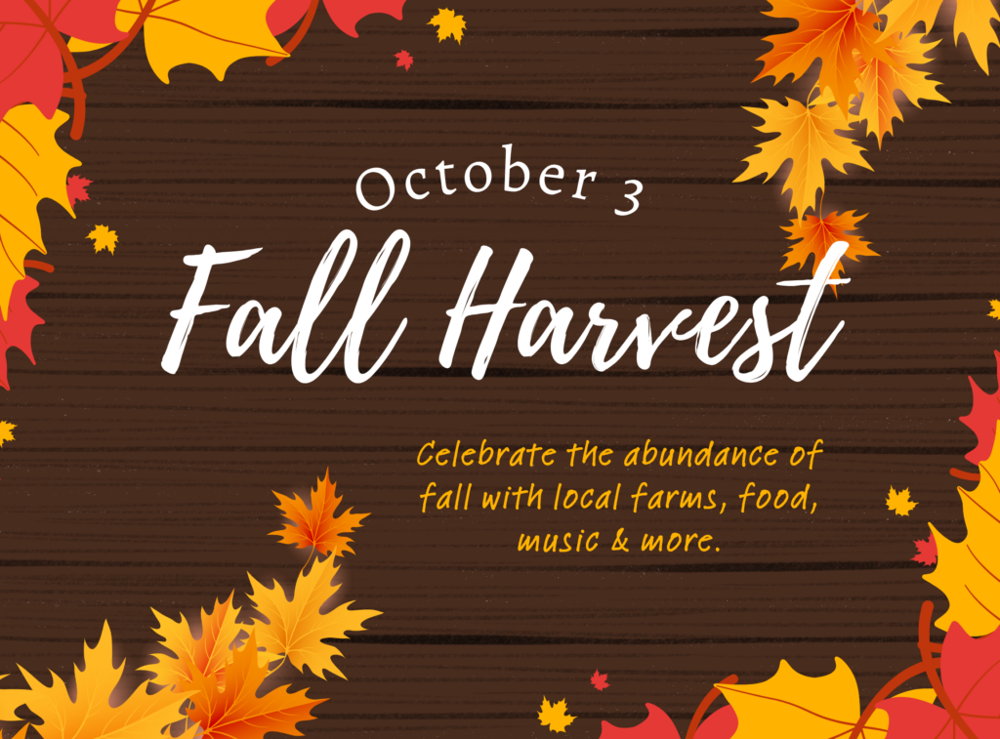

Nearby · low effort
Kirkland waterfront
A flexible lake walk with coffee, a treat, and sunset views.
FreeWalk anytime
Waterfront map ↗Labor Day weekend · Kirkland, Washington
A relaxed arrival, a choice of beautiful Monday adventures, and a BBQ at home to finish the long weekend.
View the weekend ↓Your weekend at a glance
Choose the Monday that sounds best. Sunday stays flexible after the flight.
Sunday · September 6
Land at 1 p.m., unpack, and choose one easy option only if everyone feels good.

Nearby · low effort
A flexible lake walk with coffee, a treat, and sunset views.

Flowers + grounds
Historic grounds and a relaxed Woodinville stop before an early dinner.

Farm option
Sunflowers, photo spots, and family-friendly farm activities in Snohomish.
Monday · September 7 · Labor Day
Two distinct ways to spend the day—waterfront festival or mountain trail—then back home for the BBQ.

Seattle nature
Meadows, forest, bluff, Sound views, and the lighthouse. Use the upper lots; beach parking is ADA-only and the visitor center is closed.
Boats + gardens
Watch boats move through the locks, wander the botanical garden, and keep the outing to 60–90 minutes. Visitor-center hours may be limited Monday.

Sound + beach
Open beach, Olympic views, a short loop, playground, and picnic areas. Beautiful, but holiday parking is the main gamble.

Island garden
Ferry ride plus 140 acres of gardens and forest. Bloedel is open Labor Day, 10 a.m.–5 p.m.; timed tickets are recommended.
Evening · at home
Back home, shower off the trail—or shake off the ferry—and settle in for dinner together.
Tuesday · September 8
A relaxed breakfast and an easy morning before heading onward.